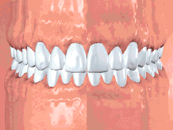

|  | La afectacion patológica de las encías, existiendo fundamentalmente dos tipos: la gingivitis y la periodontitis. Proceso inflamatorio de las encías Agravamiento de este proceso que puede dañar los tejidos blandos y los huesos que sostienen los dientes hasta el punto de provocar su caídas |
Hay distintos factores o causas que producen o aceleran la enfermedad periodontal, los más comunes: No realizar revisiones periódicas con el dentista. Mala o insuficiente higiene dental (al no eliminar placa bacteriana se forma sarro). Factores genéticos. Tipos de bacterias en nuestra boca. (Hay personas que producen más sarro que otras). Consumo de tabaco (mayor formación de sarro, es muy común en fumadores). Algunas enfermedades que potencian el daño producido por el sarro, como diabetes, osteoporosis, etc. |